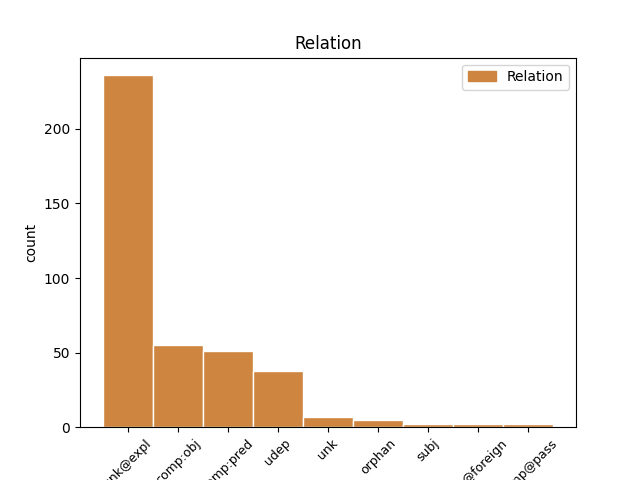
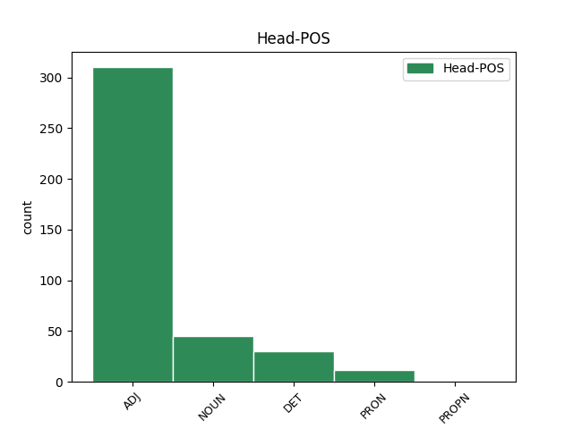
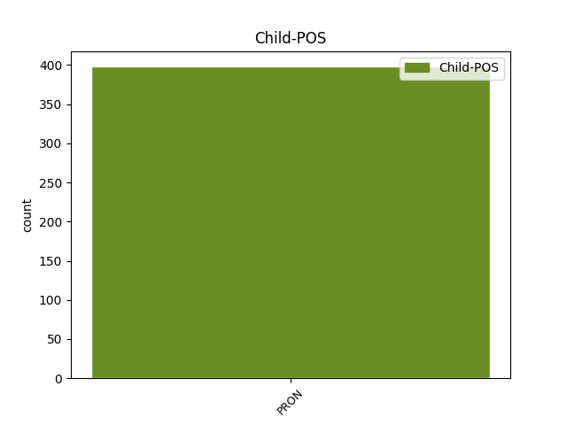

Distribution of features within this leaf



Agreement Rules sorted by frequency.
- When the dependent token is the unk@expl(unk@expl) of the head token, and the head token is ADJ and the dependent token is PRON.
1 Kondurar _ _ _ _ 0 _ _ _
2 a _ _ _ _ 0 _ _ _
3 Šinkarik _ _ _ _ 0 _ _ _
4 zkoumali _ _ _ _ 0 _ _ _
5 pohyb _ _ _ _ 0 _ _ _
6 rotující _ _ _ _ 0 _ _ _
7 družice _ _ _ _ 0 _ _ _
8 v _ _ _ _ 0 _ _ _
9 gravitačním _ _ _ _ 0 _ _ _
10 poli _ _ _ _ 0 _ _ _
11 dvou _ _ _ _ 0 _ _ _
12 sférických _ _ _ _ 0 _ _ _
13 těles _ _ _ _ 0 _ _ _
14 a _ _ _ _ 0 _ _ _
15 nalezli _ _ _ _ 0 _ _ _
16 řešení _ _ _ _ 0 _ _ _
17 lišící lišící ADJ AGNS4-----A---- Aspect=Imp|Case=Acc|Gender=Neut|Number=Sing|Polarity=Pos|Tense=Pres|VerbForm=Part|Voice=Act 0 _ _ _
18 se se PRON P7-X4---------- Case=Acc|PronType=Prs|Reflex=Yes|Variant=Short 17 unk@expl _ LGloss=(zvr._zájmeno/částice)
19 od _ _ _ _ 0 _ _ _
20 klasického _ _ _ _ 0 _ _ _
21 Langrangeova _ _ _ _ 0 _ _ _
22 výsledku _ _ _ _ 0 _ _ _
23 . _ _ _ _ 0 _ _ _
1 V _ _ _ _ 0 _ _ _
2 ideálním _ _ _ _ 0 _ _ _
3 případě _ _ _ _ 0 _ _ _
4 , _ _ _ _ 0 _ _ _
5 v _ _ _ _ 0 _ _ _
6 neproudícím _ _ _ _ 0 _ _ _
7 zcela _ _ _ _ 0 _ _ _
8 homogenním _ _ _ _ 0 _ _ _
9 prostředí _ _ _ _ 0 _ _ _
10 vyrostl _ _ _ _ 0 _ _ _
11 krystal _ _ _ _ 0 _ _ _
12 omezený _ _ _ _ 0 _ _ _
13 shodnými _ _ _ _ 0 _ _ _
14 plochami _ _ _ _ 0 _ _ _
15 , _ _ _ _ 0 _ _ _
16 které který DET P4FP1---------- Case=Nom|Gender=Fem|Number=Plur|PronType=Int,Rel 0 _ _ _
17 mají _ _ _ _ 0 _ _ _
18 všechny všechno PRON PLFP1---------- Case=Nom|Gender=Fem|Number=Plur|PronType=Tot 16 comp:pred _ _
19 stejnou _ _ _ _ 0 _ _ _
20 růstovou _ _ _ _ 0 _ _ _
21 rychlost _ _ _ _ 0 _ _ _
22 . _ _ _ _ 0 _ _ _
1 Jíl _ _ _ _ 0 _ _ _
2 a _ _ _ _ 0 _ _ _
3 hlína _ _ _ _ 0 _ _ _
4 drží _ _ _ _ 0 _ _ _
5 v _ _ _ _ 0 _ _ _
6 půdě _ _ _ _ 0 _ _ _
7 mezi _ _ _ _ 0 _ _ _
8 kameny _ _ _ _ 0 _ _ _
9 velmi _ _ _ _ 0 _ _ _
10 dlouho _ _ _ _ 0 _ _ _
11 vlhko _ _ _ _ 0 _ _ _
12 a _ _ _ _ 0 _ _ _
13 pod _ _ _ _ 0 _ _ _
14 kameny kámen NOUN NNIP7-----A---- Animacy=Inan|Case=Ins|Gender=Masc|Number=Plur|Polarity=Pos 0 _ _ _
15 samými samý PRON PLXP7---------- Case=Ins|Number=Plur|PronType=Tot 14 comp:pred _ _
16 je _ _ _ _ 0 _ _ _
17 pak _ _ _ _ 0 _ _ _
18 vlhkost _ _ _ _ 0 _ _ _
19 ještě _ _ _ _ 0 _ _ _
20 větší _ _ _ _ 0 _ _ _
21 . _ _ _ _ 0 _ _ _
1 Problémy _ _ _ _ 0 _ _ _
2 , _ _ _ _ 0 _ _ _
3 které _ _ _ _ 0 _ _ _
4 se _ _ _ _ 0 _ _ _
5 kladou _ _ _ _ 0 _ _ _
6 vědcům _ _ _ _ 0 _ _ _
7 , _ _ _ _ 0 _ _ _
8 jsou _ _ _ _ 0 _ _ _
9 většinou _ _ _ _ 0 _ _ _
10 voleny _ _ _ _ 0 _ _ _
11 jimi on PRON PPXP7--3------- Case=Ins|Number=Plur|Person=3|PronType=Prs 0 _ _ _
12 samými samý PRON PLXP7---------- Case=Ins|Number=Plur|PronType=Tot 11 comp:pred _ SpaceAfter=No
13 . _ _ _ _ 0 _ _ _
1 Druhý _ _ _ _ 0 _ _ _
2 pozorovací _ _ _ _ 0 _ _ _
3 večer _ _ _ _ 0 _ _ _
4 se _ _ _ _ 0 _ _ _
5 koná _ _ _ _ 0 _ _ _
6 v _ _ _ _ 0 _ _ _
7 lednu _ _ _ _ 0 _ _ _
8 až _ _ _ _ 0 _ _ _
9 únoru _ _ _ _ 0 _ _ _
10 a _ _ _ _ 0 _ _ _
11 plní _ _ _ _ 0 _ _ _
12 se _ _ _ _ 0 _ _ _
13 při _ _ _ _ 0 _ _ _
14 něm _ _ _ _ 0 _ _ _
15 # _ _ _ _ 0 _ _ _
16 zbývajících _ _ _ _ 0 _ _ _
17 úkolů _ _ _ _ 0 _ _ _
18 , _ _ _ _ 0 _ _ _
19 pozorování _ _ _ _ 0 _ _ _
20 povrchu _ _ _ _ 0 _ _ _
21 planety _ _ _ _ 0 _ _ _
22 , _ _ _ _ 0 _ _ _
23 pozorování _ _ _ _ 0 _ _ _
24 dvojhvězdy _ _ _ _ 0 _ _ _
25 , _ _ _ _ 0 _ _ _
26 pozorování pozorování NOUN NNNS1-----A---- Case=Nom|Gender=Neut|Number=Sing|Polarity=Pos 0 _ _ _
27 otevřené _ _ _ _ 0 _ _ _
28 hvězdokupy _ _ _ _ 0 _ _ _
29 , _ _ _ _ 0 _ _ _
30 Plejády _ _ _ _ 0 _ _ _
31 , _ _ _ _ 0 _ _ _
32 vše všechno PRON PLNS1---------1 Case=Nom|Gender=Neut|Number=Sing|PronType=Tot 26 unk _ _
33 s _ _ _ _ 0 _ _ _
34 pomocí _ _ _ _ 0 _ _ _
35 dalekohledu _ _ _ _ 0 _ _ _
36 , _ _ _ _ 0 _ _ _
37 zimní _ _ _ _ 0 _ _ _
38 souhvězdí _ _ _ _ 0 _ _ _
39 , _ _ _ _ 0 _ _ _
40 měření _ _ _ _ 0 _ _ _
41 úhlových _ _ _ _ 0 _ _ _
42 vzdáleností _ _ _ _ 0 _ _ _
43 na _ _ _ _ 0 _ _ _
44 obloze _ _ _ _ 0 _ _ _
45 , _ _ _ _ 0 _ _ _
46 odhad _ _ _ _ 0 _ _ _
47 jasnosti _ _ _ _ 0 _ _ _
48 a _ _ _ _ 0 _ _ _
49 barvy _ _ _ _ 0 _ _ _
50 hlavních _ _ _ _ 0 _ _ _
51 hvězd _ _ _ _ 0 _ _ _
52 , _ _ _ _ 0 _ _ _
53 souhvězdí _ _ _ _ 0 _ _ _
54 Orion _ _ _ _ 0 _ _ _
55 . _ _ _ _ 0 _ _ _
1 Především _ _ _ _ 0 _ _ _
2 bude _ _ _ _ 0 _ _ _
3 nutné _ _ _ _ 0 _ _ _
4 objasnit _ _ _ _ 0 _ _ _
5 zásadní _ _ _ _ 0 _ _ _
6 rysy _ _ _ _ 0 _ _ _
7 , _ _ _ _ 0 _ _ _
8 jež _ _ _ _ 0 _ _ _
9 proces _ _ _ _ 0 _ _ _
10 v _ _ _ _ 0 _ _ _
11 estetickovýchovných _ _ _ _ 0 _ _ _
12 předmětech _ _ _ _ 0 _ _ _
13 odlišují _ _ _ _ 0 _ _ _
14 od _ _ _ _ 0 _ _ _
15 procesu _ _ _ _ 0 _ _ _
16 v _ _ _ _ 0 _ _ _
17 ostatních _ _ _ _ 0 _ _ _
18 předmětech _ _ _ _ 0 _ _ _
19 , _ _ _ _ 0 _ _ _
20 dále _ _ _ _ 0 _ _ _
21 specifické _ _ _ _ 0 _ _ _
22 rysy _ _ _ _ 0 _ _ _
23 procesu _ _ _ _ 0 _ _ _
24 výchovy _ _ _ _ 0 _ _ _
25 slovesným _ _ _ _ 0 _ _ _
26 uměním _ _ _ _ 0 _ _ _
27 odlišující odlišující ADJ AGIP4-----A---- Animacy=Inan|Aspect=Imp|Case=Acc|Gender=Masc|Number=Plur|Polarity=Pos|Tense=Pres|VerbForm=Part|Voice=Act 0 _ _ _
28 jej on PRON PPZS4--3------2 Case=Acc|Gender=Masc,Neut|Number=Sing|Person=3|PronType=Prs|Style=Arch 27 comp:obj _ _
29 od _ _ _ _ 0 _ _ _
30 procesu _ _ _ _ 0 _ _ _
31 v _ _ _ _ 0 _ _ _
32 ostatních _ _ _ _ 0 _ _ _
33 estetickovýchovných _ _ _ _ 0 _ _ _
34 předmětech _ _ _ _ 0 _ _ _
35 . _ _ _ _ 0 _ _ _
1 Hodně _ _ _ _ 0 _ _ _
2 rybářů _ _ _ _ 0 _ _ _
3 z _ _ _ _ 0 _ _ _
4 naší _ _ _ _ 0 _ _ _
5 frýdlantské _ _ _ _ 0 _ _ _
6 organizace _ _ _ _ 0 _ _ _
7 se _ _ _ _ 0 _ _ _
8 na _ _ _ _ 0 _ _ _
9 mne _ _ _ _ 0 _ _ _
10 s _ _ _ _ 0 _ _ _
11 důvěrou _ _ _ _ 0 _ _ _
12 obrací _ _ _ _ 0 _ _ _
13 a _ _ _ _ 0 _ _ _
14 zdobí _ _ _ _ 0 _ _ _
15 si _ _ _ _ 0 _ _ _
16 své _ _ _ _ 0 _ _ _
17 byty _ _ _ _ 0 _ _ _
18 mnou já PRON PP-S7--1------- Case=Ins|Number=Sing|Person=1|PronType=Prs 19 udep _ _
19 preparovanými preparovaný ADJ AAFP7----1A---- Case=Ins|Degree=Pos|Gender=Fem|Number=Plur|Polarity=Pos 0 _ _ _
20 trofejemi _ _ _ _ 0 _ _ _
21 . _ _ _ _ 0 _ _ _
1 Tito _ _ _ _ 0 _ _ _
2 skladatelé _ _ _ _ 0 _ _ _
3 se _ _ _ _ 0 _ _ _
4 většinou _ _ _ _ 0 _ _ _
5 zabydleli _ _ _ _ 0 _ _ _
6 ve _ _ _ _ 0 _ _ _
7 stopách _ _ _ _ 0 _ _ _
8 Smetanových _ _ _ _ 0 _ _ _
9 a _ _ _ _ 0 _ _ _
10 zásobovali _ _ _ _ 0 _ _ _
11 hudební _ _ _ _ 0 _ _ _
12 život _ _ _ _ 0 _ _ _
13 neproblematickou _ _ _ _ 0 _ _ _
14 , _ _ _ _ 0 _ _ _
15 snadno _ _ _ _ 0 _ _ _
16 uskutečnitelnou _ _ _ _ 0 _ _ _
17 produkcí _ _ _ _ 0 _ _ _
18 konzervativní _ _ _ _ 0 _ _ _
19 a _ _ _ _ 0 _ _ _
20 konzervující _ _ _ _ 0 _ _ _
21 , _ _ _ _ 0 _ _ _
22 která _ _ _ _ 0 _ _ _
23 zrcadlila _ _ _ _ 0 _ _ _
24 i _ _ _ _ 0 _ _ _
25 utvrzovala _ _ _ _ 0 _ _ _
26 pozvolné _ _ _ _ 0 _ _ _
27 smiřování smiřování NOUN NNNS4-----A---- Case=Acc|Gender=Neut|Number=Sing|Polarity=Pos 0 _ _ _
28 se se PRON P7-X4---------- Case=Acc|PronType=Prs|Reflex=Yes|Variant=Short 27 unk@expl _ LGloss=(zvr._zájmeno/částice)
29 s _ _ _ _ 0 _ _ _
30 malými _ _ _ _ 0 _ _ _
31 poměry _ _ _ _ 0 _ _ _
32 . _ _ _ _ 0 _ _ _
1 Filozofie _ _ _ _ 0 _ _ _
2 , _ _ _ _ 0 _ _ _
3 která _ _ _ _ 0 _ _ _
4 si _ _ _ _ 0 _ _ _
5 kladla _ _ _ _ 0 _ _ _
6 za _ _ _ _ 0 _ _ _
7 svůj _ _ _ _ 0 _ _ _
8 úkol _ _ _ _ 0 _ _ _
9 stanovit _ _ _ _ 0 _ _ _
10 nejobecnější _ _ _ _ 0 _ _ _
11 principy _ _ _ _ 0 _ _ _
12 , _ _ _ _ 0 _ _ _
13 zákony _ _ _ _ 0 _ _ _
14 světa _ _ _ _ 0 _ _ _
15 jako _ _ _ _ 0 _ _ _
16 celku _ _ _ _ 0 _ _ _
17 , _ _ _ _ 0 _ _ _
18 najít _ _ _ _ 0 _ _ _
19 řád _ _ _ _ 0 _ _ _
20 veškerého _ _ _ _ 0 _ _ _
21 jsoucna _ _ _ _ 0 _ _ _
22 , _ _ _ _ 0 _ _ _
23 dávala _ _ _ _ 0 _ _ _
24 eo eo PRON PPNS6--3------- Case=Loc|Foreign=Yes|Gender=Neut|Number=Sing|Person=3|PronType=Prs 0 _ _ _
25 ipso ipso PRON PLZS6---------- Case=Loc|Foreign=Yes|Gender=Masc,Neut|Number=Sing|PronType=Tot 24 flat@foreign _ _
26 od _ _ _ _ 0 _ _ _
27 svého _ _ _ _ 0 _ _ _
28 zrodu _ _ _ _ 0 _ _ _
29 vždy _ _ _ _ 0 _ _ _
30 také _ _ _ _ 0 _ _ _
31 odpověď _ _ _ _ 0 _ _ _
32 na _ _ _ _ 0 _ _ _
33 otázku _ _ _ _ 0 _ _ _
34 , _ _ _ _ 0 _ _ _
35 co _ _ _ _ 0 _ _ _
36 je _ _ _ _ 0 _ _ _
37 člověk _ _ _ _ 0 _ _ _
38 , _ _ _ _ 0 _ _ _
39 v _ _ _ _ 0 _ _ _
40 čem _ _ _ _ 0 _ _ _
41 je _ _ _ _ 0 _ _ _
42 podstata _ _ _ _ 0 _ _ _
43 i _ _ _ _ 0 _ _ _
44 smysl _ _ _ _ 0 _ _ _
45 humanity _ _ _ _ 0 _ _ _
46 , _ _ _ _ 0 _ _ _
47 třebaže _ _ _ _ 0 _ _ _
48 ne _ _ _ _ 0 _ _ _
49 v _ _ _ _ 0 _ _ _
50 každém _ _ _ _ 0 _ _ _
51 případě _ _ _ _ 0 _ _ _
52 explicite _ _ _ _ 0 _ _ _
53 a _ _ _ _ 0 _ _ _
54 třebaže _ _ _ _ 0 _ _ _
55 problematiku _ _ _ _ 0 _ _ _
56 humanismu _ _ _ _ 0 _ _ _
57 v _ _ _ _ 0 _ _ _
58 etickém _ _ _ _ 0 _ _ _
59 smyslu _ _ _ _ 0 _ _ _
60 začala _ _ _ _ 0 _ _ _
61 jako _ _ _ _ 0 _ _ _
62 samostatnou _ _ _ _ 0 _ _ _
63 otázku _ _ _ _ 0 _ _ _
64 řešit _ _ _ _ 0 _ _ _
65 poměrně _ _ _ _ 0 _ _ _
66 pozdě _ _ _ _ 0 _ _ _
67 . _ _ _ _ 0 _ _ _
1 Za _ _ _ _ 0 _ _ _
2 minulých _ _ _ _ 0 _ _ _
3 pět _ _ _ _ 0 _ _ _
4 let _ _ _ _ 0 _ _ _
5 se _ _ _ _ 0 _ _ _
6 jen _ _ _ _ 0 _ _ _
7 v _ _ _ _ 0 _ _ _
8 Moskvě Moskva PROPN NNFS6-----A---- Case=Loc|Gender=Fem|NameType=Geo|Number=Sing|Polarity=Pos 0 _ _ _
9 samé samý PRON PLFS6---------- Case=Loc|Gender=Fem|Number=Sing|PronType=Tot 8 comp:pred _ _
10 našlo _ _ _ _ 0 _ _ _
11 šest _ _ _ _ 0 _ _ _
12 pokladů _ _ _ _ 0 _ _ _
13 . _ _ _ _ 0 _ _ _
1 Všechny všechno PRON PLIP1---------- Animacy=Inan|Case=Nom|Gender=Masc|Number=Plur|PronType=Tot 3 unk _ _
2 jsou _ _ _ _ 0 _ _ _
3 upotřebitelné upotřebitelný ADJ AAIP1----1A---- Animacy=Inan|Case=Nom|Degree=Pos|Gender=Masc|Number=Plur|Polarity=Pos 0 _ _ _
4 . _ _ _ _ 0 _ _ _
1 Je _ _ _ _ 0 _ _ _
2 nepochybné _ _ _ _ 0 _ _ _
3 , _ _ _ _ 0 _ _ _
4 že _ _ _ _ 0 _ _ _
5 empirická _ _ _ _ 0 _ _ _
6 zjištění _ _ _ _ 0 _ _ _
7 by _ _ _ _ 0 _ _ _
8 ukázala _ _ _ _ 0 _ _ _
9 nerovnoměrná _ _ _ _ 0 _ _ _
10 zvlnění _ _ _ _ 0 _ _ _
11 , _ _ _ _ 0 _ _ _
12 jež jenž PRON PJXP1---------- Case=Nom|Number=Plur|PrepCase=Npr|PronType=Rel 25 subj _ LGloss=(který_[ve_vedl.větě])
13 budou _ _ _ _ 0 _ _ _
14 výraznější _ _ _ _ 0 _ _ _
15 v _ _ _ _ 0 _ _ _
16 údobích _ _ _ _ 0 _ _ _
17 zrychleného _ _ _ _ 0 _ _ _
18 vývoje _ _ _ _ 0 _ _ _
19 , _ _ _ _ 0 _ _ _
20 jako _ _ _ _ 0 _ _ _
21 je _ _ _ _ 0 _ _ _
22 dozrávání _ _ _ _ 0 _ _ _
23 , _ _ _ _ 0 _ _ _
24 a _ _ _ _ 0 _ _ _
25 rovnoměrnější rovnoměrný ADJ AANP1----2A---- Case=Nom|Degree=Cmp|Gender=Neut|Number=Plur|Polarity=Pos 0 _ _ _
26 v _ _ _ _ 0 _ _ _
27 údobích _ _ _ _ 0 _ _ _
28 uklidněných _ _ _ _ 0 _ _ _
29 , _ _ _ _ 0 _ _ _
30 jako _ _ _ _ 0 _ _ _
31 je _ _ _ _ 0 _ _ _
32 v _ _ _ _ 0 _ _ _
33 lidském _ _ _ _ 0 _ _ _
34 životě _ _ _ _ 0 _ _ _
35 fáze _ _ _ _ 0 _ _ _
36 dospělosti _ _ _ _ 0 _ _ _
37 . _ _ _ _ 0 _ _ _
1 Čistota _ _ _ _ 0 _ _ _
2 ovzduší _ _ _ _ 0 _ _ _
3 bude _ _ _ _ 0 _ _ _
4 čím co PRON PQ--7---------- Animacy=Inan|Case=Ins|PronType=Int,Rel 6 unk _ LId=co-1
5 dále _ _ _ _ 0 _ _ _
6 tím ten DET PDZS7---------- Case=Ins|Gender=Masc,Neut|Number=Sing|PronType=Dem 0 _ _ _
7 důležitějším _ _ _ _ 0 _ _ _
8 činitelem _ _ _ _ 0 _ _ _
9 , _ _ _ _ 0 _ _ _
10 který _ _ _ _ 0 _ _ _
11 v _ _ _ _ 0 _ _ _
12 některých _ _ _ _ 0 _ _ _
13 případech _ _ _ _ 0 _ _ _
14 může _ _ _ _ 0 _ _ _
15 převýšit _ _ _ _ 0 _ _ _
16 i _ _ _ _ 0 _ _ _
17 hlediska _ _ _ _ 0 _ _ _
18 energetická _ _ _ _ 0 _ _ _
19 . _ _ _ _ 0 _ _ _
Disagree Examples:
1 Motorovým _ _ _ _ 0 _ _ _
2 vozidlem _ _ _ _ 0 _ _ _
3 se _ _ _ _ 0 _ _ _
4 rozumí _ _ _ _ 0 _ _ _
5 vozidlo _ _ _ _ 0 _ _ _
6 určené _ _ _ _ 0 _ _ _
7 pro _ _ _ _ 0 _ _ _
8 přepravu _ _ _ _ 0 _ _ _
9 osob _ _ _ _ 0 _ _ _
10 nebo _ _ _ _ 0 _ _ _
11 nákladů _ _ _ _ 0 _ _ _
12 všeho _ _ _ _ 0 _ _ _
13 druhu _ _ _ _ 0 _ _ _
14 pohybující pohybující ADJ AGNS1-----A---- Aspect=Imp|Case=Nom|Gender=Neut|Number=Sing|Polarity=Pos|Tense=Pres|VerbForm=Part|Voice=Act 0 _ _ _
15 se se PRON P7-X4---------- Case=Acc|PronType=Prs|Reflex=Yes|Variant=Short 14 unk@expl _ LGloss=(zvr._zájmeno/částice)
16 motorickou _ _ _ _ 0 _ _ _
17 silou _ _ _ _ 0 _ _ _
18 po _ _ _ _ 0 _ _ _
19 silnici _ _ _ _ 0 _ _ _
20 . _ _ _ _ 0 _ _ _
1 Nemotorovým _ _ _ _ 0 _ _ _
2 vozidlem _ _ _ _ 0 _ _ _
3 se _ _ _ _ 0 _ _ _
4 rozumí _ _ _ _ 0 _ _ _
5 vozidlo _ _ _ _ 0 _ _ _
6 pohybující pohybující ADJ AGNS1-----A---- Aspect=Imp|Case=Nom|Gender=Neut|Number=Sing|Polarity=Pos|Tense=Pres|VerbForm=Part|Voice=Act 0 _ _ _
7 se se PRON P7-X4---------- Case=Acc|PronType=Prs|Reflex=Yes|Variant=Short 6 unk@expl _ LGloss=(zvr._zájmeno/částice)
8 pomocí _ _ _ _ 0 _ _ _
9 lidské _ _ _ _ 0 _ _ _
10 nebo _ _ _ _ 0 _ _ _
11 zvířecí _ _ _ _ 0 _ _ _
12 síly _ _ _ _ 0 _ _ _
13 , _ _ _ _ 0 _ _ _
14 jízdní _ _ _ _ 0 _ _ _
15 kolo _ _ _ _ 0 _ _ _
16 , _ _ _ _ 0 _ _ _
17 potahové _ _ _ _ 0 _ _ _
18 vozidlo _ _ _ _ 0 _ _ _
19 , _ _ _ _ 0 _ _ _
20 ruční _ _ _ _ 0 _ _ _
21 vozík _ _ _ _ 0 _ _ _
22 . _ _ _ _ 0 _ _ _
1 V _ _ _ _ 0 _ _ _
2 tomto _ _ _ _ 0 _ _ _
3 novém _ _ _ _ 0 _ _ _
4 ustanovení _ _ _ _ 0 _ _ _
5 jsou _ _ _ _ 0 _ _ _
6 vysvětlovány _ _ _ _ 0 _ _ _
7 nejdůležitější _ _ _ _ 0 _ _ _
8 a _ _ _ _ 0 _ _ _
9 opakující opakující ADJ AGIP1-----A---- Animacy=Inan|Aspect=Imp|Case=Nom|Gender=Masc|Number=Plur|Polarity=Pos|Tense=Pres|VerbForm=Part|Voice=Act 0 _ _ _
10 se se PRON P7-X4---------- Case=Acc|PronType=Prs|Reflex=Yes|Variant=Short 9 unk@expl _ LGloss=(zvr._zájmeno/částice)
11 pojmy _ _ _ _ 0 _ _ _
12 . _ _ _ _ 0 _ _ _
1 Správa _ _ _ _ 0 _ _ _
2 domu _ _ _ _ 0 _ _ _
3 je _ _ _ _ 0 _ _ _
4 také _ _ _ _ 0 _ _ _
5 povinna _ _ _ _ 0 _ _ _
6 na _ _ _ _ 0 _ _ _
7 nástěnce _ _ _ _ 0 _ _ _
8 uveřejňovat _ _ _ _ 0 _ _ _
9 důležitá _ _ _ _ 0 _ _ _
10 sdělení _ _ _ _ 0 _ _ _
11 o _ _ _ _ 0 _ _ _
12 opatřeních _ _ _ _ 0 _ _ _
13 týkajících týkající ADJ AGNP6-----A---- Aspect=Imp|Case=Loc|Gender=Neut|Number=Plur|Polarity=Pos|Tense=Pres|VerbForm=Part|Voice=Act 0 _ _ _
14 se se PRON P7-X4---------- Case=Acc|PronType=Prs|Reflex=Yes|Variant=Short 13 unk@expl _ LGloss=(zvr._zájmeno/částice)
15 údržby _ _ _ _ 0 _ _ _
16 a _ _ _ _ 0 _ _ _
17 užívání _ _ _ _ 0 _ _ _
18 bytů _ _ _ _ 0 _ _ _
19 , _ _ _ _ 0 _ _ _
20 společných _ _ _ _ 0 _ _ _
21 prostorů _ _ _ _ 0 _ _ _
22 a _ _ _ _ 0 _ _ _
23 zařízení _ _ _ _ 0 _ _ _
24 domu _ _ _ _ 0 _ _ _
25 . _ _ _ _ 0 _ _ _
1 Dohodu _ _ _ _ 0 _ _ _
2 o _ _ _ _ 0 _ _ _
3 vedlejší _ _ _ _ 0 _ _ _
4 činnosti _ _ _ _ 0 _ _ _
5 uzavírá _ _ _ _ 0 _ _ _
6 za _ _ _ _ 0 _ _ _
7 podnik _ _ _ _ 0 _ _ _
8 s _ _ _ _ 0 _ _ _
9 pracovníky _ _ _ _ 0 _ _ _
10 závodu _ _ _ _ 0 _ _ _
11 ředitel _ _ _ _ 0 _ _ _
12 závodu _ _ _ _ 0 _ _ _
13 , _ _ _ _ 0 _ _ _
14 s _ _ _ _ 0 _ _ _
15 pracovníky _ _ _ _ 0 _ _ _
16 podnikového _ _ _ _ 0 _ _ _
17 ředitelství _ _ _ _ 0 _ _ _
18 ředitel _ _ _ _ 0 _ _ _
19 , _ _ _ _ 0 _ _ _
20 popřípadě _ _ _ _ 0 _ _ _
21 jimi on PRON PPXP7--3------- Case=Ins|Number=Plur|Person=3|PronType=Prs 22 comp:obj _ _
22 zmocněný zmocněný ADJ AAMS1----1A---- Animacy=Anim|Case=Nom|Degree=Pos|Gender=Masc|Number=Sing|Polarity=Pos 0 _ _ _
23 vedoucí _ _ _ _ 0 _ _ _
24 pracovník _ _ _ _ 0 _ _ _
25 závodu _ _ _ _ 0 _ _ _
26 , _ _ _ _ 0 _ _ _
27 respektive _ _ _ _ 0 _ _ _
28 podnikové _ _ _ _ 0 _ _ _
29 ředitelství _ _ _ _ 0 _ _ _
30 . _ _ _ _ 0 _ _ _